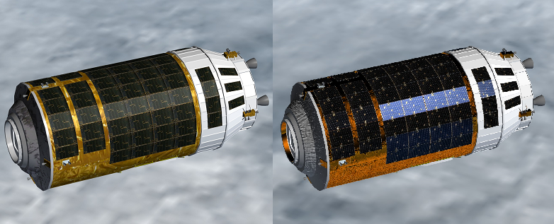

HTV（こうのとり）MODのダウンロード・インストール
H-IIB HTV MODは、Orbiter2010にH-IIBロケットとHTV（こうのとり）を追加するMODです。
ISS A to ZなどのMODを導入すれば、ISSとのランデブー・ドッキングも再現できます。
ダウンロード
Author: Donamy
H-IIB HTV
必要なファイル
Spacecraft3.dllおよびMultistage2015.dll
Spacecraft.dll+Multistage.dll+Stage.dllのダウンロード
インストール
ダウンロードしたファイルを解凍して、中身をOrbiterのインストールフォルダに上書き。
OrbiterにMODを導入する
パッチファイル
Multistage2015のオートパイロットを利用するためのパッチファイルを作ってみました。
機体の重量やエンジン出力などが現実のそれに近くなるように、一部の設定を変更しています。
H2BHTVpatch.zip
ダウンロードしたファイルを解凍して、中身をOrbiterフォルダに上書き。
注意：HTV3、HTV4などのMODは別機体扱いなので対応していません。
テクスチャMOD
Orbiter2010+D3D9Client専用のテクスチャMODです。
必須ではありませんが、HTVの見た目が華やかになります。
Author: felix24
HTV Textures
ダウンロードしたファイルを解凍する。
- H2B.dds
- H2B_norm.dds
- H2B_refl.dds
- H2B_spec.dds
以上の4つのファイルをTexturesフォルダに入れて、既存のファイルを上書きする。
左がMODなし、右がMODあり

使用可能なシナリオ
注意：同梱されているシナリオのうち、以下の2つは必要なMODが公開停止になっているので使えません。
HTV attatched to Harmony for FLEET
HTV attatched to JEMEF for FLEET
打ち上げ
JAXA launch（打ち上げシナリオ）をダブルクリックしてゲームを開始します。
キーボードでPを押すと10秒後に打ち上げが実行されます。
打ち上げが終了したら、Jを押してHTVをロケットから分離します。
HTV3、HTV4、HTV5などのMODも公開されており、それぞれの打ち上げシナリオを追加できます。
Search results for "htv" - Orbit Hangar Mods
基本的にはH-IIB HTVに上書きするだけですが、シナリオによっては他のMODを導入する必要があります。
readmeファイルを参照してください。